Proyecto Integrador 5.12 — Capítulo 5: Árboles e Interpretabilidad#
Notebook 1: Análisis Exploratorio de Datos (EDA)#
Asignatura: Machine Learning Proyecto: Predicción de Churn en Telecomunicaciones Dataset: IBM Telco Customer Churn (7,043 clientes) Fecha: 2025
Objetivo del Notebook#
Este notebook constituye la primera etapa del flujo de trabajo del proyecto. Su propósito es realizar un análisis exploratorio riguroso del dataset IBM Telco Customer Churn con los siguientes objetivos específicos:
Comprender la estructura del dataset: dimensiones, tipos de variables y calidad de los datos.
Detectar valores faltantes y duplicados que requieran tratamiento previo al modelado.
Analizar el desbalance de la variable objetivo (
Churn) para anticipar estrategias de evaluación.Identificar patrones y correlaciones entre las variables predictoras y la probabilidad de abandono.
Generar hipótesis sobre qué variables tendrán mayor importancia en los modelos predictivos.
Los resultados de este análisis guiarán las decisiones de preprocesamiento y selección de modelos en el Notebook 2.
Análisis Exploratorio de Datos - Telco Customer Churn#
Este notebook presenta el análisis exploratorio inicial del dataset Telco Customer Churn. El objetivo es comprender la estructura de los datos, revisar la calidad de la información, analizar la variable objetivo Churn e identificar patrones relevantes para la posterior construcción de modelos de clasificación.
El análisis incluye revisión de valores faltantes, duplicados, distribución de variables numéricas y categóricas, tasas de churn por categoría y análisis cruzado entre variables relevantes.
import pandas as pd
import numpy as np
import matplotlib.pyplot as plt
import seaborn as sns
from pathlib import Path
pd.set_option("display.max_columns", None)
pd.set_option("display.max_rows", 100)
2. Carga del Dataset#
Se carga el dataset original desde la carpeta data/raw/. La ruta se construye de forma relativa
al directorio del proyecto usando pathlib.Path, lo que garantiza compatibilidad entre sistemas operativos.
Se espera observar el dataset con 7,043 registros y 21 columnas, incluyendo variables demográficas,
servicios contratados, información contractual y la variable objetivo Churn.
BASE_DIR = Path.cwd().parent if Path.cwd().name == "notebooks" else Path.cwd()
DATA_PATH = BASE_DIR / "data" / "raw" / "WA_Fn-UseC_-Telco-Customer-Churn.csv"
df = pd.read_csv(DATA_PATH)
df.head()
| customerID | gender | SeniorCitizen | Partner | Dependents | tenure | PhoneService | MultipleLines | InternetService | OnlineSecurity | OnlineBackup | DeviceProtection | TechSupport | StreamingTV | StreamingMovies | Contract | PaperlessBilling | PaymentMethod | MonthlyCharges | TotalCharges | Churn | |
|---|---|---|---|---|---|---|---|---|---|---|---|---|---|---|---|---|---|---|---|---|---|
| 0 | 7590-VHVEG | Female | 0 | Yes | No | 1 | No | No phone service | DSL | No | Yes | No | No | No | No | Month-to-month | Yes | Electronic check | 29.85 | 29.85 | No |
| 1 | 5575-GNVDE | Male | 0 | No | No | 34 | Yes | No | DSL | Yes | No | Yes | No | No | No | One year | No | Mailed check | 56.95 | 1889.5 | No |
| 2 | 3668-QPYBK | Male | 0 | No | No | 2 | Yes | No | DSL | Yes | Yes | No | No | No | No | Month-to-month | Yes | Mailed check | 53.85 | 108.15 | Yes |
| 3 | 7795-CFOCW | Male | 0 | No | No | 45 | No | No phone service | DSL | Yes | No | Yes | Yes | No | No | One year | No | Bank transfer (automatic) | 42.30 | 1840.75 | No |
| 4 | 9237-HQITU | Female | 0 | No | No | 2 | Yes | No | Fiber optic | No | No | No | No | No | No | Month-to-month | Yes | Electronic check | 70.70 | 151.65 | Yes |
df.shape
(7043, 21)
3. Calidad del Dataset#
Se analiza la calidad del dataset mediante tres verificaciones fundamentales:
Dimensiones (
shape): número de filas y columnas.Tipos de datos (
info): permite identificar columnas que requieren conversión de tipo.Estadísticas descriptivas (
describe): distribución de variables numéricas y frecuencias de categóricas.Valores faltantes (
isna().sum()): identifica columnas con datos incompletos.Registros duplicados (
duplicated().sum()): verifica la unicidad de los registros.
Se anticipa que TotalCharges, aunque debería ser numérica, puede estar codificada como object,
lo que genera valores nulos al convertirla.
df.info()
<class 'pandas.core.frame.DataFrame'>
RangeIndex: 7043 entries, 0 to 7042
Data columns (total 21 columns):
# Column Non-Null Count Dtype
--- ------ -------------- -----
0 customerID 7043 non-null object
1 gender 7043 non-null object
2 SeniorCitizen 7043 non-null int64
3 Partner 7043 non-null object
4 Dependents 7043 non-null object
5 tenure 7043 non-null int64
6 PhoneService 7043 non-null object
7 MultipleLines 7043 non-null object
8 InternetService 7043 non-null object
9 OnlineSecurity 7043 non-null object
10 OnlineBackup 7043 non-null object
11 DeviceProtection 7043 non-null object
12 TechSupport 7043 non-null object
13 StreamingTV 7043 non-null object
14 StreamingMovies 7043 non-null object
15 Contract 7043 non-null object
16 PaperlessBilling 7043 non-null object
17 PaymentMethod 7043 non-null object
18 MonthlyCharges 7043 non-null float64
19 TotalCharges 7043 non-null object
20 Churn 7043 non-null object
dtypes: float64(1), int64(2), object(18)
memory usage: 1.1+ MB
df.describe(include="all").T
| count | unique | top | freq | mean | std | min | 25% | 50% | 75% | max | |
|---|---|---|---|---|---|---|---|---|---|---|---|
| customerID | 7043 | 7043 | 3186-AJIEK | 1 | NaN | NaN | NaN | NaN | NaN | NaN | NaN |
| gender | 7043 | 2 | Male | 3555 | NaN | NaN | NaN | NaN | NaN | NaN | NaN |
| SeniorCitizen | 7043.0 | NaN | NaN | NaN | 0.162147 | 0.368612 | 0.0 | 0.0 | 0.0 | 0.0 | 1.0 |
| Partner | 7043 | 2 | No | 3641 | NaN | NaN | NaN | NaN | NaN | NaN | NaN |
| Dependents | 7043 | 2 | No | 4933 | NaN | NaN | NaN | NaN | NaN | NaN | NaN |
| tenure | 7043.0 | NaN | NaN | NaN | 32.371149 | 24.559481 | 0.0 | 9.0 | 29.0 | 55.0 | 72.0 |
| PhoneService | 7043 | 2 | Yes | 6361 | NaN | NaN | NaN | NaN | NaN | NaN | NaN |
| MultipleLines | 7043 | 3 | No | 3390 | NaN | NaN | NaN | NaN | NaN | NaN | NaN |
| InternetService | 7043 | 3 | Fiber optic | 3096 | NaN | NaN | NaN | NaN | NaN | NaN | NaN |
| OnlineSecurity | 7043 | 3 | No | 3498 | NaN | NaN | NaN | NaN | NaN | NaN | NaN |
| OnlineBackup | 7043 | 3 | No | 3088 | NaN | NaN | NaN | NaN | NaN | NaN | NaN |
| DeviceProtection | 7043 | 3 | No | 3095 | NaN | NaN | NaN | NaN | NaN | NaN | NaN |
| TechSupport | 7043 | 3 | No | 3473 | NaN | NaN | NaN | NaN | NaN | NaN | NaN |
| StreamingTV | 7043 | 3 | No | 2810 | NaN | NaN | NaN | NaN | NaN | NaN | NaN |
| StreamingMovies | 7043 | 3 | No | 2785 | NaN | NaN | NaN | NaN | NaN | NaN | NaN |
| Contract | 7043 | 3 | Month-to-month | 3875 | NaN | NaN | NaN | NaN | NaN | NaN | NaN |
| PaperlessBilling | 7043 | 2 | Yes | 4171 | NaN | NaN | NaN | NaN | NaN | NaN | NaN |
| PaymentMethod | 7043 | 4 | Electronic check | 2365 | NaN | NaN | NaN | NaN | NaN | NaN | NaN |
| MonthlyCharges | 7043.0 | NaN | NaN | NaN | 64.761692 | 30.090047 | 18.25 | 35.5 | 70.35 | 89.85 | 118.75 |
| TotalCharges | 7043 | 6531 | 20.2 | 11 | NaN | NaN | NaN | NaN | NaN | NaN | NaN |
| Churn | 7043 | 2 | No | 5174 | NaN | NaN | NaN | NaN | NaN | NaN | NaN |
df.columns.tolist()
['customerID',
'gender',
'SeniorCitizen',
'Partner',
'Dependents',
'tenure',
'PhoneService',
'MultipleLines',
'InternetService',
'OnlineSecurity',
'OnlineBackup',
'DeviceProtection',
'TechSupport',
'StreamingTV',
'StreamingMovies',
'Contract',
'PaperlessBilling',
'PaymentMethod',
'MonthlyCharges',
'TotalCharges',
'Churn']
df.isna().sum().sort_values(ascending=False)
customerID 0
gender 0
SeniorCitizen 0
Partner 0
Dependents 0
tenure 0
PhoneService 0
MultipleLines 0
InternetService 0
OnlineSecurity 0
OnlineBackup 0
DeviceProtection 0
TechSupport 0
StreamingTV 0
StreamingMovies 0
Contract 0
PaperlessBilling 0
PaymentMethod 0
MonthlyCharges 0
TotalCharges 0
Churn 0
dtype: int64
df.duplicated().sum()
np.int64(0)
Interpretación de la Calidad del Dataset#
El dataset presenta una calidad satisfactoria en su estado original. No se detectan registros duplicados
y la mayoría de las variables no presentan valores faltantes declarados. Sin embargo, la columna TotalCharges
está almacenada como tipo object en lugar de float64, lo que indica que contiene valores no numéricos
(cadenas vacías para clientes con tenure = 0). Al convertirla con pd.to_numeric, se generan 11 valores
nulos que corresponden a clientes que no han realizado ningún pago (clientes nuevos con tenure = 0).
Esta condición es coherente con el dominio del negocio: un cliente con cero meses de permanencia no tiene
cargos totales registrados. Por tanto, la imputación con valor 0 es la decisión más adecuada, ya que
refleja fielmente la realidad operacional.
df["customerID"].duplicated().sum()
np.int64(0)
df["Churn"].value_counts()
Churn
No 5174
Yes 1869
Name: count, dtype: int64
4. Análisis de la Variable Objetivo#
Se analiza la distribución de la variable Churn para cuantificar el desbalance entre clases.
Este paso es crítico porque un desbalance significativo puede hacer que modelos entrenados con
accuracy como única métrica sean engañosos: un clasificador que siempre predice “No Churn”
alcanzaría ~73% de accuracy sin ningún valor predictivo real.
Se espera confirmar que existe un desbalance moderado (~73% No / ~27% Sí), lo que justifica el uso de métricas como AUC-ROC, F1-score y Recall como criterios primarios de evaluación.
df["Churn"].value_counts(normalize=True) * 100
Churn
No 73.463013
Yes 26.536987
Name: proportion, dtype: float64
plt.figure(figsize=(6, 4))
sns.countplot(data=df, x="Churn")
plt.title("Distribución de la variable objetivo: Churn")
plt.xlabel("Churn")
plt.ylabel("Cantidad de clientes")
plt.show()
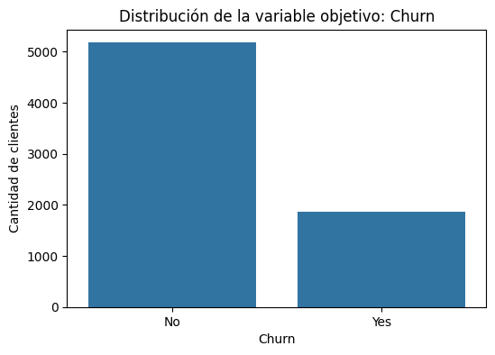
La variable objetivo es Churn, que indica si un cliente abandonó o no la empresa. En esta primera revisión se observa si existe desbalance entre las clases, lo cual es importante porque puede afectar el entrenamiento de los modelos de clasificación.
df["TotalCharges"] = pd.to_numeric(df["TotalCharges"], errors="coerce")
df["TotalCharges"].isna().sum()
np.int64(11)
df[df["TotalCharges"].isna()]
| customerID | gender | SeniorCitizen | Partner | Dependents | tenure | PhoneService | MultipleLines | InternetService | OnlineSecurity | OnlineBackup | DeviceProtection | TechSupport | StreamingTV | StreamingMovies | Contract | PaperlessBilling | PaymentMethod | MonthlyCharges | TotalCharges | Churn | |
|---|---|---|---|---|---|---|---|---|---|---|---|---|---|---|---|---|---|---|---|---|---|
| 488 | 4472-LVYGI | Female | 0 | Yes | Yes | 0 | No | No phone service | DSL | Yes | No | Yes | Yes | Yes | No | Two year | Yes | Bank transfer (automatic) | 52.55 | NaN | No |
| 753 | 3115-CZMZD | Male | 0 | No | Yes | 0 | Yes | No | No | No internet service | No internet service | No internet service | No internet service | No internet service | No internet service | Two year | No | Mailed check | 20.25 | NaN | No |
| 936 | 5709-LVOEQ | Female | 0 | Yes | Yes | 0 | Yes | No | DSL | Yes | Yes | Yes | No | Yes | Yes | Two year | No | Mailed check | 80.85 | NaN | No |
| 1082 | 4367-NUYAO | Male | 0 | Yes | Yes | 0 | Yes | Yes | No | No internet service | No internet service | No internet service | No internet service | No internet service | No internet service | Two year | No | Mailed check | 25.75 | NaN | No |
| 1340 | 1371-DWPAZ | Female | 0 | Yes | Yes | 0 | No | No phone service | DSL | Yes | Yes | Yes | Yes | Yes | No | Two year | No | Credit card (automatic) | 56.05 | NaN | No |
| 3331 | 7644-OMVMY | Male | 0 | Yes | Yes | 0 | Yes | No | No | No internet service | No internet service | No internet service | No internet service | No internet service | No internet service | Two year | No | Mailed check | 19.85 | NaN | No |
| 3826 | 3213-VVOLG | Male | 0 | Yes | Yes | 0 | Yes | Yes | No | No internet service | No internet service | No internet service | No internet service | No internet service | No internet service | Two year | No | Mailed check | 25.35 | NaN | No |
| 4380 | 2520-SGTTA | Female | 0 | Yes | Yes | 0 | Yes | No | No | No internet service | No internet service | No internet service | No internet service | No internet service | No internet service | Two year | No | Mailed check | 20.00 | NaN | No |
| 5218 | 2923-ARZLG | Male | 0 | Yes | Yes | 0 | Yes | No | No | No internet service | No internet service | No internet service | No internet service | No internet service | No internet service | One year | Yes | Mailed check | 19.70 | NaN | No |
| 6670 | 4075-WKNIU | Female | 0 | Yes | Yes | 0 | Yes | Yes | DSL | No | Yes | Yes | Yes | Yes | No | Two year | No | Mailed check | 73.35 | NaN | No |
| 6754 | 2775-SEFEE | Male | 0 | No | Yes | 0 | Yes | Yes | DSL | Yes | Yes | No | Yes | No | No | Two year | Yes | Bank transfer (automatic) | 61.90 | NaN | No |
df["TotalCharges"] = df["TotalCharges"].fillna(0)
df["TotalCharges"].isna().sum()
np.int64(0)
target = "Churn"
numeric_cols = df.select_dtypes(include=["int64", "float64"]).columns.tolist()
categorical_cols = df.select_dtypes(include=["object"]).columns.tolist()
categorical_cols = [col for col in categorical_cols if col not in ["customerID", target]]
print("Variables numéricas:")
print(numeric_cols)
print("\nVariables categóricas:")
print(categorical_cols)
Variables numéricas:
['SeniorCitizen', 'tenure', 'MonthlyCharges', 'TotalCharges']
Variables categóricas:
['gender', 'Partner', 'Dependents', 'PhoneService', 'MultipleLines', 'InternetService', 'OnlineSecurity', 'OnlineBackup', 'DeviceProtection', 'TechSupport', 'StreamingTV', 'StreamingMovies', 'Contract', 'PaperlessBilling', 'PaymentMethod']
df[numeric_cols].describe().T
| count | mean | std | min | 25% | 50% | 75% | max | |
|---|---|---|---|---|---|---|---|---|
| SeniorCitizen | 7043.0 | 0.162147 | 0.368612 | 0.00 | 0.00 | 0.00 | 0.00 | 1.00 |
| tenure | 7043.0 | 32.371149 | 24.559481 | 0.00 | 9.00 | 29.00 | 55.00 | 72.00 |
| MonthlyCharges | 7043.0 | 64.761692 | 30.090047 | 18.25 | 35.50 | 70.35 | 89.85 | 118.75 |
| TotalCharges | 7043.0 | 2279.734304 | 2266.794470 | 0.00 | 398.55 | 1394.55 | 3786.60 | 8684.80 |
for col in numeric_cols:
plt.figure(figsize=(7, 4))
sns.histplot(data=df, x=col, hue="Churn", kde=True, bins=30)
plt.title(f"Distribución de {col} según Churn")
plt.xlabel(col)
plt.ylabel("Frecuencia")
plt.show()
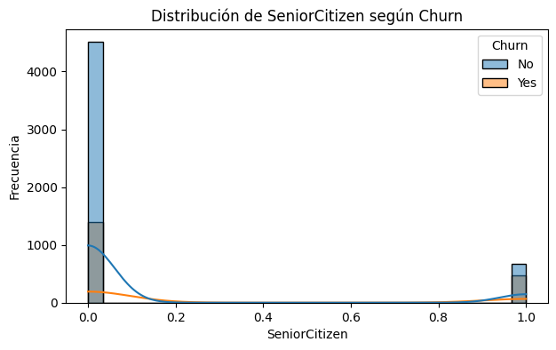
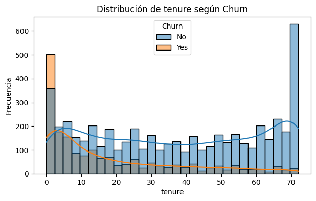
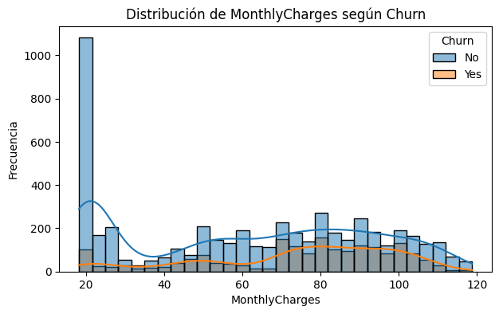
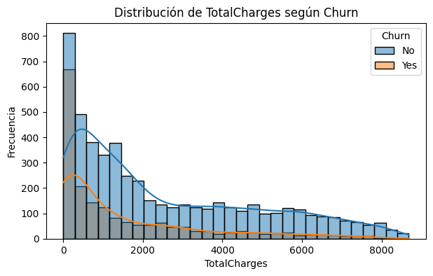
for col in categorical_cols:
print(f"\n{col}")
print(df[col].value_counts())
gender
gender
Male 3555
Female 3488
Name: count, dtype: int64
Partner
Partner
No 3641
Yes 3402
Name: count, dtype: int64
Dependents
Dependents
No 4933
Yes 2110
Name: count, dtype: int64
PhoneService
PhoneService
Yes 6361
No 682
Name: count, dtype: int64
MultipleLines
MultipleLines
No 3390
Yes 2971
No phone service 682
Name: count, dtype: int64
InternetService
InternetService
Fiber optic 3096
DSL 2421
No 1526
Name: count, dtype: int64
OnlineSecurity
OnlineSecurity
No 3498
Yes 2019
No internet service 1526
Name: count, dtype: int64
OnlineBackup
OnlineBackup
No 3088
Yes 2429
No internet service 1526
Name: count, dtype: int64
DeviceProtection
DeviceProtection
No 3095
Yes 2422
No internet service 1526
Name: count, dtype: int64
TechSupport
TechSupport
No 3473
Yes 2044
No internet service 1526
Name: count, dtype: int64
StreamingTV
StreamingTV
No 2810
Yes 2707
No internet service 1526
Name: count, dtype: int64
StreamingMovies
StreamingMovies
No 2785
Yes 2732
No internet service 1526
Name: count, dtype: int64
Contract
Contract
Month-to-month 3875
Two year 1695
One year 1473
Name: count, dtype: int64
PaperlessBilling
PaperlessBilling
Yes 4171
No 2872
Name: count, dtype: int64
PaymentMethod
PaymentMethod
Electronic check 2365
Mailed check 1612
Bank transfer (automatic) 1544
Credit card (automatic) 1522
Name: count, dtype: int64
for col in categorical_cols:
plt.figure(figsize=(8, 4))
sns.countplot(data=df, x=col, hue="Churn")
plt.title(f"{col} según Churn")
plt.xlabel(col)
plt.ylabel("Cantidad de clientes")
plt.xticks(rotation=45)
plt.tight_layout()
plt.show()
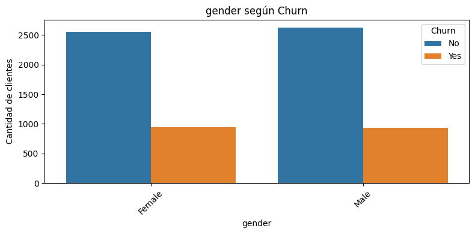
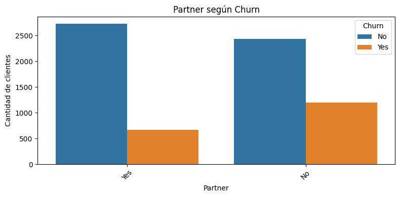
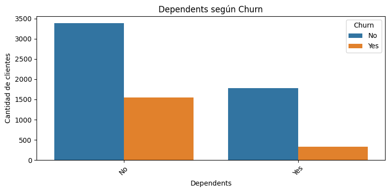
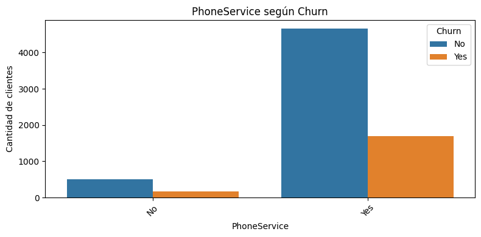
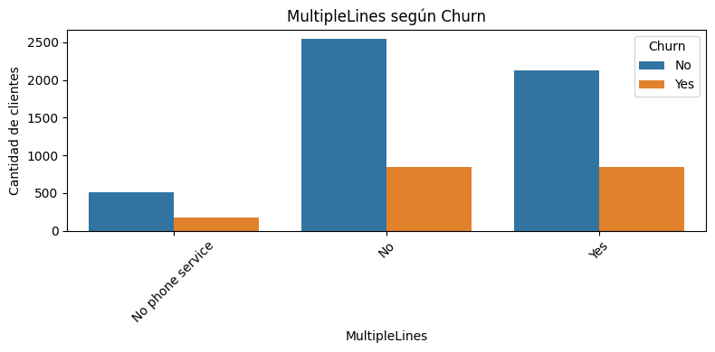
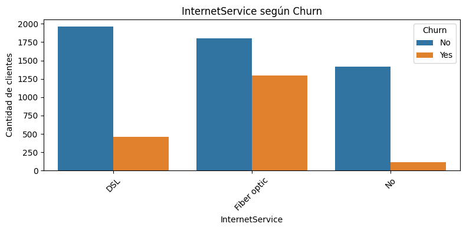
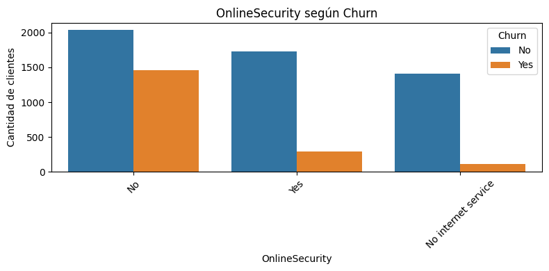
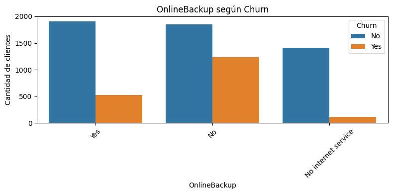
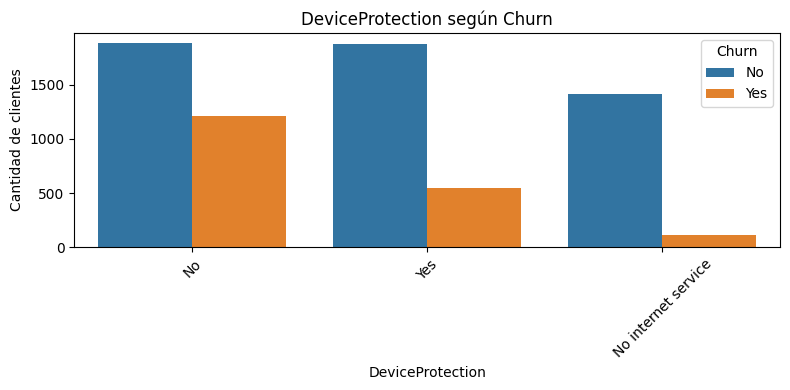
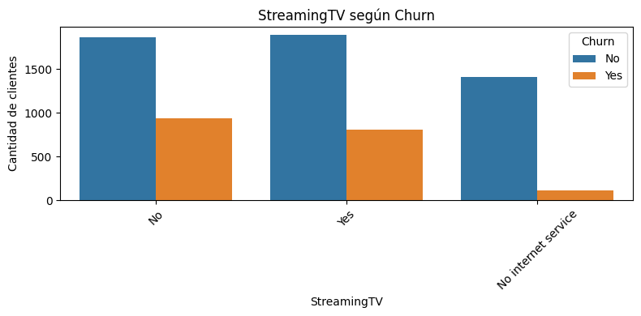
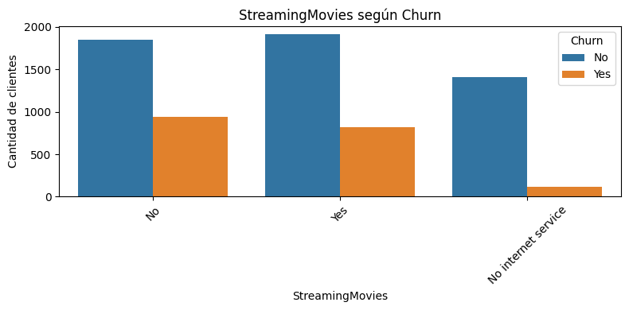
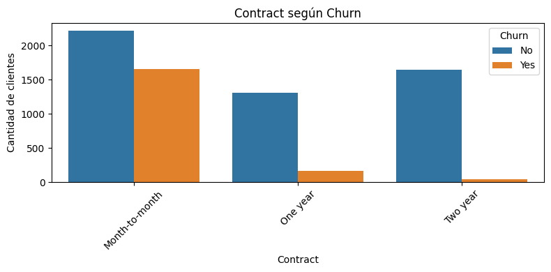
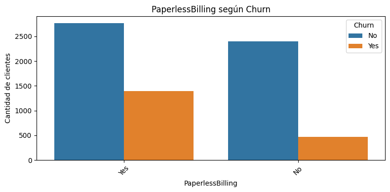
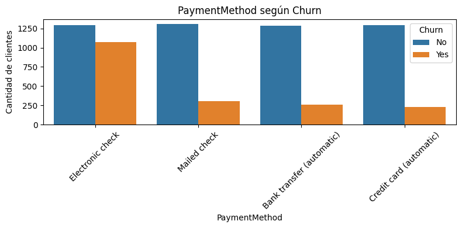
def churn_rate_by_category(data, column):
resumen = (
data.groupby(column)["Churn"]
.value_counts(normalize=True)
.rename("proporcion")
.reset_index()
)
resumen["porcentaje"] = resumen["proporcion"] * 100
return resumen
churn_rate_by_category(df, "Contract")
| Contract | Churn | proporcion | porcentaje | |
|---|---|---|---|---|
| 0 | Month-to-month | No | 0.572903 | 57.290323 |
| 1 | Month-to-month | Yes | 0.427097 | 42.709677 |
| 2 | One year | No | 0.887305 | 88.730482 |
| 3 | One year | Yes | 0.112695 | 11.269518 |
| 4 | Two year | No | 0.971681 | 97.168142 |
| 5 | Two year | Yes | 0.028319 | 2.831858 |
for col in ["Contract", "InternetService", "PaymentMethod", "OnlineSecurity", "TechSupport", "PaperlessBilling"]:
print(f"\nTasa de churn por {col}")
display(churn_rate_by_category(df, col))
Tasa de churn por Contract
| Contract | Churn | proporcion | porcentaje | |
|---|---|---|---|---|
| 0 | Month-to-month | No | 0.572903 | 57.290323 |
| 1 | Month-to-month | Yes | 0.427097 | 42.709677 |
| 2 | One year | No | 0.887305 | 88.730482 |
| 3 | One year | Yes | 0.112695 | 11.269518 |
| 4 | Two year | No | 0.971681 | 97.168142 |
| 5 | Two year | Yes | 0.028319 | 2.831858 |
Tasa de churn por InternetService
| InternetService | Churn | proporcion | porcentaje | |
|---|---|---|---|---|
| 0 | DSL | No | 0.810409 | 81.040892 |
| 1 | DSL | Yes | 0.189591 | 18.959108 |
| 2 | Fiber optic | No | 0.581072 | 58.107235 |
| 3 | Fiber optic | Yes | 0.418928 | 41.892765 |
| 4 | No | No | 0.925950 | 92.595020 |
| 5 | No | Yes | 0.074050 | 7.404980 |
Tasa de churn por PaymentMethod
| PaymentMethod | Churn | proporcion | porcentaje | |
|---|---|---|---|---|
| 0 | Bank transfer (automatic) | No | 0.832902 | 83.290155 |
| 1 | Bank transfer (automatic) | Yes | 0.167098 | 16.709845 |
| 2 | Credit card (automatic) | No | 0.847569 | 84.756899 |
| 3 | Credit card (automatic) | Yes | 0.152431 | 15.243101 |
| 4 | Electronic check | No | 0.547146 | 54.714588 |
| 5 | Electronic check | Yes | 0.452854 | 45.285412 |
| 6 | Mailed check | No | 0.808933 | 80.893300 |
| 7 | Mailed check | Yes | 0.191067 | 19.106700 |
Tasa de churn por OnlineSecurity
| OnlineSecurity | Churn | proporcion | porcentaje | |
|---|---|---|---|---|
| 0 | No | No | 0.582333 | 58.233276 |
| 1 | No | Yes | 0.417667 | 41.766724 |
| 2 | No internet service | No | 0.925950 | 92.595020 |
| 3 | No internet service | Yes | 0.074050 | 7.404980 |
| 4 | Yes | No | 0.853888 | 85.388806 |
| 5 | Yes | Yes | 0.146112 | 14.611194 |
Tasa de churn por TechSupport
| TechSupport | Churn | proporcion | porcentaje | |
|---|---|---|---|---|
| 0 | No | No | 0.583645 | 58.364526 |
| 1 | No | Yes | 0.416355 | 41.635474 |
| 2 | No internet service | No | 0.925950 | 92.595020 |
| 3 | No internet service | Yes | 0.074050 | 7.404980 |
| 4 | Yes | No | 0.848337 | 84.833659 |
| 5 | Yes | Yes | 0.151663 | 15.166341 |
Tasa de churn por PaperlessBilling
| PaperlessBilling | Churn | proporcion | porcentaje | |
|---|---|---|---|---|
| 0 | No | No | 0.836699 | 83.669916 |
| 1 | No | Yes | 0.163301 | 16.330084 |
| 2 | Yes | No | 0.664349 | 66.434908 |
| 3 | Yes | Yes | 0.335651 | 33.565092 |
Diccionario de variables#
Antes de iniciar el análisis exploratorio, se presenta un diccionario de las principales variables del dataset. Esto permite comprender el significado de cada atributo y su posible relación con la variable objetivo Churn.
diccionario_variables = pd.DataFrame({
"Variable": [
"customerID", "gender", "SeniorCitizen", "Partner", "Dependents",
"tenure", "PhoneService", "MultipleLines", "InternetService",
"OnlineSecurity", "OnlineBackup", "DeviceProtection", "TechSupport",
"StreamingTV", "StreamingMovies", "Contract", "PaperlessBilling",
"PaymentMethod", "MonthlyCharges", "TotalCharges", "Churn"
],
"Descripción": [
"Identificador único del cliente.",
"Género del cliente.",
"Indica si el cliente es adulto mayor: 1 = Sí, 0 = No.",
"Indica si el cliente tiene pareja.",
"Indica si el cliente tiene dependientes.",
"Número de meses que el cliente ha permanecido con la empresa.",
"Indica si el cliente tiene servicio telefónico.",
"Indica si el cliente tiene múltiples líneas telefónicas.",
"Tipo de servicio de internet contratado.",
"Indica si el cliente tiene seguridad en línea.",
"Indica si el cliente tiene respaldo en línea.",
"Indica si el cliente tiene protección de dispositivos.",
"Indica si el cliente tiene soporte técnico.",
"Indica si el cliente tiene servicio de televisión por streaming.",
"Indica si el cliente tiene servicio de películas por streaming.",
"Tipo de contrato del cliente.",
"Indica si el cliente usa facturación electrónica.",
"Método de pago utilizado por el cliente.",
"Cargo mensual del cliente.",
"Cargo total acumulado del cliente.",
"Variable objetivo: indica si el cliente abandonó la empresa."
],
"Tipo esperado": [
"Categórica identificadora", "Categórica", "Numérica binaria",
"Categórica", "Categórica", "Numérica", "Categórica",
"Categórica", "Categórica", "Categórica", "Categórica",
"Categórica", "Categórica", "Categórica", "Categórica",
"Categórica", "Categórica", "Categórica", "Numérica",
"Numérica", "Categórica objetivo"
]
})
diccionario_variables
| Variable | Descripción | Tipo esperado | |
|---|---|---|---|
| 0 | customerID | Identificador único del cliente. | Categórica identificadora |
| 1 | gender | Género del cliente. | Categórica |
| 2 | SeniorCitizen | Indica si el cliente es adulto mayor: 1 = Sí, ... | Numérica binaria |
| 3 | Partner | Indica si el cliente tiene pareja. | Categórica |
| 4 | Dependents | Indica si el cliente tiene dependientes. | Categórica |
| 5 | tenure | Número de meses que el cliente ha permanecido ... | Numérica |
| 6 | PhoneService | Indica si el cliente tiene servicio telefónico. | Categórica |
| 7 | MultipleLines | Indica si el cliente tiene múltiples líneas te... | Categórica |
| 8 | InternetService | Tipo de servicio de internet contratado. | Categórica |
| 9 | OnlineSecurity | Indica si el cliente tiene seguridad en línea. | Categórica |
| 10 | OnlineBackup | Indica si el cliente tiene respaldo en línea. | Categórica |
| 11 | DeviceProtection | Indica si el cliente tiene protección de dispo... | Categórica |
| 12 | TechSupport | Indica si el cliente tiene soporte técnico. | Categórica |
| 13 | StreamingTV | Indica si el cliente tiene servicio de televis... | Categórica |
| 14 | StreamingMovies | Indica si el cliente tiene servicio de películ... | Categórica |
| 15 | Contract | Tipo de contrato del cliente. | Categórica |
| 16 | PaperlessBilling | Indica si el cliente usa facturación electrónica. | Categórica |
| 17 | PaymentMethod | Método de pago utilizado por el cliente. | Categórica |
| 18 | MonthlyCharges | Cargo mensual del cliente. | Numérica |
| 19 | TotalCharges | Cargo total acumulado del cliente. | Numérica |
| 20 | Churn | Variable objetivo: indica si el cliente abando... | Categórica objetivo |
Análisis del desbalance de la variable objetivo#
En problemas de churn, es importante revisar si la variable objetivo está balanceada. Si hay una clase mucho más frecuente que la otra, métricas como accuracy pueden ser engañosas. Por eso, en la etapa de modelado también será necesario considerar métricas como precision, recall, F1-score y AUC.
churn_counts = df["Churn"].value_counts()
churn_percentages = df["Churn"].value_counts(normalize=True) * 100
resumen_churn = pd.DataFrame({
"Cantidad": churn_counts,
"Porcentaje": churn_percentages.round(2)
})
resumen_churn
| Cantidad | Porcentaje | |
|---|---|---|
| Churn | ||
| No | 5174 | 73.46 |
| Yes | 1869 | 26.54 |
plt.figure(figsize=(6, 4))
sns.countplot(data=df, x="Churn")
plt.title("Distribución de la variable objetivo: Churn")
plt.xlabel("Churn")
plt.ylabel("Cantidad de clientes")
plt.show()
plt.figure(figsize=(6, 4))
ax = sns.barplot(
x=churn_percentages.index,
y=churn_percentages.values
)
plt.title("Distribución porcentual de Churn")
plt.xlabel("Churn")
plt.ylabel("Porcentaje de clientes")
for i, value in enumerate(churn_percentages.values):
ax.text(i, value + 1, f"{value:.2f}%", ha="center")
plt.ylim(0, 100)
plt.show()
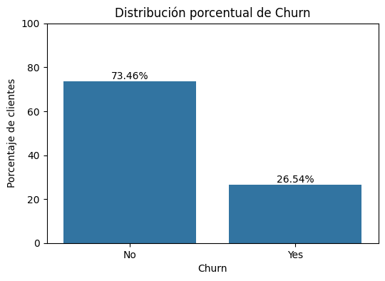
Interpretación del Desbalance#
La variable objetivo Churn presenta un desbalance moderado con una proporción aproximada de 3:1
entre clientes que no abandonaron (73.46%) y clientes que sí lo hicieron (26.54%). Este tipo de
desbalance es habitual en problemas de retención de clientes y representa un desafío para los modelos
de clasificación tradicionales.
En consecuencia, durante la etapa de modelado se priorizarán las siguientes estrategias:
División estratificada del conjunto de entrenamiento y prueba para preservar la proporción de clases.
Métricas de evaluación robustas: AUC-ROC, Recall, F1-score y Precision en lugar de Accuracy.
Parámetros de balance de clases en los clasificadores (
class_weight='balanced',scale_pos_weight).
El AUC-ROC es la métrica principal de selección de modelos, ya que mide la capacidad discriminativa del modelo con independencia del umbral de clasificación.
Interpretación#
La variable objetivo Churn presenta una mayor proporción de clientes que no abandonaron la empresa frente a los que sí abandonaron. Esto evidencia un desbalance moderado entre clases.
Por esta razón, en la etapa de modelado no será suficiente evaluar únicamente el accuracy. Será importante analizar métricas como recall, precision, F1-score y AUC, especialmente porque el objetivo del negocio es identificar correctamente a los clientes con riesgo de abandono.
Análisis de variables numéricas según Churn#
Se comparan las principales variables numéricas con la variable objetivo Churn. Esto permite identificar si existen diferencias visibles entre los clientes que abandonaron y los que permanecieron en la empresa.
5. Análisis de Variables Numéricas#
Se analiza la distribución de las cuatro variables numéricas del dataset (SeniorCitizen, tenure,
MonthlyCharges, TotalCharges) segmentadas por la variable objetivo Churn.
Se utilizan boxplots y histogramas para visualizar:
La distribución de cada variable y sus percentiles.
Las diferencias estadísticas entre clientes con y sin churn.
La presencia de valores atípicos que pudieran afectar al escalado.
Se anticipan diferencias significativas en tenure (antigüedad) y MonthlyCharges (cargos mensuales)
entre las dos clases de la variable objetivo.
Interpretación de Variables Numéricas#
El análisis estadístico comparativo revela diferencias sustanciales entre los dos grupos:
Tenure (antigüedad en meses): Los clientes que abandonaron la empresa presentan una antigüedad media de 17.98 meses, notablemente inferior a los 37.57 meses de los clientes que permanecieron. Esta diferencia sugiere que los clientes nuevos o con poca antigüedad son significativamente más vulnerables al churn, posiblemente porque aún no han consolidado su relación con la empresa ni experimentado suficientes beneficios del servicio.
MonthlyCharges (cargos mensuales): Los clientes con churn presentan cargos mensuales promedio más altos (\(74.44 vs \)61.27). Esto podría indicar que los clientes con planes más costosos —probablemente asociados a servicios de fibra óptica— experimentan mayor insatisfacción o encuentran alternativas más económicas en la competencia.
TotalCharges (cargos totales):
Paradójicamente, los clientes con churn presentan cargos totales menores (\(1,531.80 vs \)2,549.91),
lo que es consistente con su menor antigüedad: han estado menos tiempo y, por tanto, han acumulado
menos facturación total. Esta variable no es independiente de tenure.
Estas observaciones confirman la relevancia predictiva de las variables numéricas y anticipan que
tenure será una de las features más importantes en los modelos de clasificación.
numeric_analysis_cols = ["tenure", "MonthlyCharges", "TotalCharges"]
for col in numeric_analysis_cols:
plt.figure(figsize=(7, 4))
sns.boxplot(data=df, x="Churn", y=col)
plt.title(f"Distribución de {col} según Churn")
plt.xlabel("Churn")
plt.ylabel(col)
plt.show()
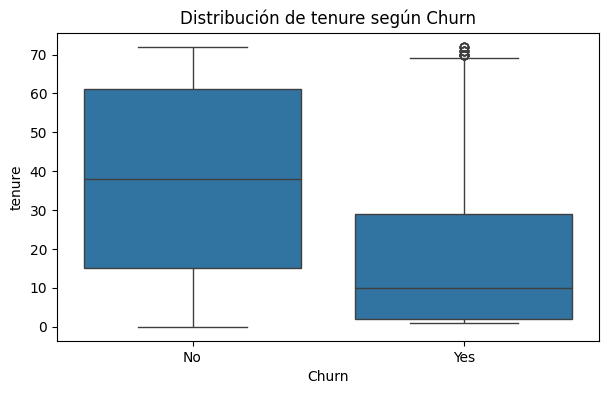
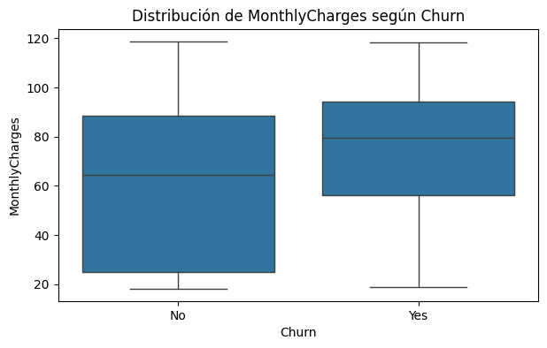
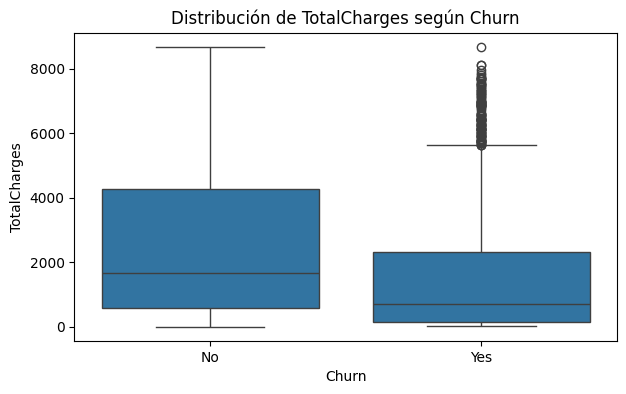
df.groupby("Churn")[numeric_analysis_cols].agg(["mean", "median", "std", "min", "max"]).round(2)
| tenure | MonthlyCharges | TotalCharges | |||||||||||||
|---|---|---|---|---|---|---|---|---|---|---|---|---|---|---|---|
| mean | median | std | min | max | mean | median | std | min | max | mean | median | std | min | max | |
| Churn | |||||||||||||||
| No | 37.57 | 38.0 | 24.11 | 0 | 72 | 61.27 | 64.43 | 31.09 | 18.25 | 118.75 | 2549.91 | 1679.52 | 2329.95 | 0.00 | 8672.45 |
| Yes | 17.98 | 10.0 | 19.53 | 1 | 72 | 74.44 | 79.65 | 24.67 | 18.85 | 118.35 | 1531.80 | 703.55 | 1890.82 | 18.85 | 8684.80 |
Interpretación#
Los boxplots permiten comparar el comportamiento de las variables numéricas entre clientes que abandonaron y clientes que permanecieron.
En particular, tenure es una variable relevante porque puede mostrar si los clientes con menor antigüedad presentan mayor tendencia al churn. Asimismo, MonthlyCharges y TotalCharges ayudan a analizar si los cargos mensuales o acumulados están relacionados con el abandono.
Tasa de churn por categorías#
A continuación se calcula la tasa de churn para las principales variables categóricas. Esta tasa indica el porcentaje de clientes que abandonaron la empresa dentro de cada categoría.
def churn_rate_table(data, column):
resumen = (
data.groupby(column)
.agg(
clientes=(column, "count"),
clientes_churn=("Churn", lambda x: (x == "Yes").sum()),
churn_rate=("Churn", lambda x: (x == "Yes").mean() * 100)
)
.reset_index()
.sort_values("churn_rate", ascending=False)
)
resumen["churn_rate"] = resumen["churn_rate"].round(2)
return resumen
variables_categoricas_clave = [
"Contract",
"InternetService",
"PaymentMethod",
"OnlineSecurity",
"TechSupport",
"PaperlessBilling",
"OnlineBackup",
"DeviceProtection"
]
for col in variables_categoricas_clave:
print(f"\nTasa de churn por {col}")
display(churn_rate_table(df, col))
Tasa de churn por Contract
| Contract | clientes | clientes_churn | churn_rate | |
|---|---|---|---|---|
| 0 | Month-to-month | 3875 | 1655 | 42.71 |
| 1 | One year | 1473 | 166 | 11.27 |
| 2 | Two year | 1695 | 48 | 2.83 |
Tasa de churn por InternetService
| InternetService | clientes | clientes_churn | churn_rate | |
|---|---|---|---|---|
| 1 | Fiber optic | 3096 | 1297 | 41.89 |
| 0 | DSL | 2421 | 459 | 18.96 |
| 2 | No | 1526 | 113 | 7.40 |
Tasa de churn por PaymentMethod
| PaymentMethod | clientes | clientes_churn | churn_rate | |
|---|---|---|---|---|
| 2 | Electronic check | 2365 | 1071 | 45.29 |
| 3 | Mailed check | 1612 | 308 | 19.11 |
| 0 | Bank transfer (automatic) | 1544 | 258 | 16.71 |
| 1 | Credit card (automatic) | 1522 | 232 | 15.24 |
Tasa de churn por OnlineSecurity
| OnlineSecurity | clientes | clientes_churn | churn_rate | |
|---|---|---|---|---|
| 0 | No | 3498 | 1461 | 41.77 |
| 2 | Yes | 2019 | 295 | 14.61 |
| 1 | No internet service | 1526 | 113 | 7.40 |
Tasa de churn por TechSupport
| TechSupport | clientes | clientes_churn | churn_rate | |
|---|---|---|---|---|
| 0 | No | 3473 | 1446 | 41.64 |
| 2 | Yes | 2044 | 310 | 15.17 |
| 1 | No internet service | 1526 | 113 | 7.40 |
Tasa de churn por PaperlessBilling
| PaperlessBilling | clientes | clientes_churn | churn_rate | |
|---|---|---|---|---|
| 1 | Yes | 4171 | 1400 | 33.57 |
| 0 | No | 2872 | 469 | 16.33 |
Tasa de churn por OnlineBackup
| OnlineBackup | clientes | clientes_churn | churn_rate | |
|---|---|---|---|---|
| 0 | No | 3088 | 1233 | 39.93 |
| 2 | Yes | 2429 | 523 | 21.53 |
| 1 | No internet service | 1526 | 113 | 7.40 |
Tasa de churn por DeviceProtection
| DeviceProtection | clientes | clientes_churn | churn_rate | |
|---|---|---|---|---|
| 0 | No | 3095 | 1211 | 39.13 |
| 2 | Yes | 2422 | 545 | 22.50 |
| 1 | No internet service | 1526 | 113 | 7.40 |
for col in variables_categoricas_clave:
resumen = churn_rate_table(df, col)
plt.figure(figsize=(8, 4))
sns.barplot(data=resumen, x=col, y="churn_rate")
plt.title(f"Tasa de churn por {col}")
plt.xlabel(col)
plt.ylabel("Tasa de churn (%)")
plt.xticks(rotation=45)
plt.tight_layout()
plt.show()
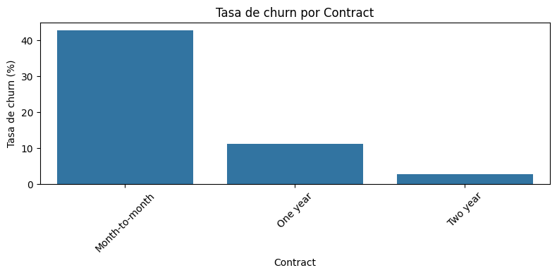
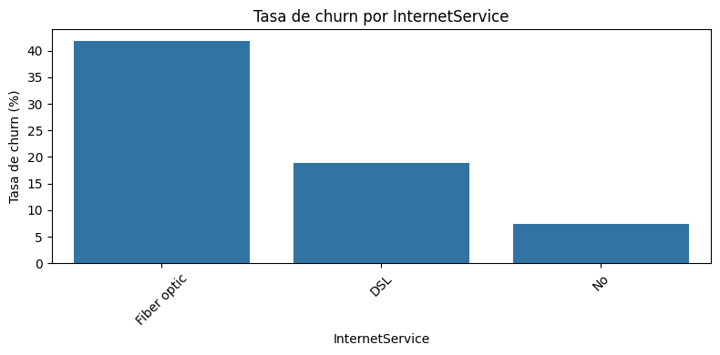
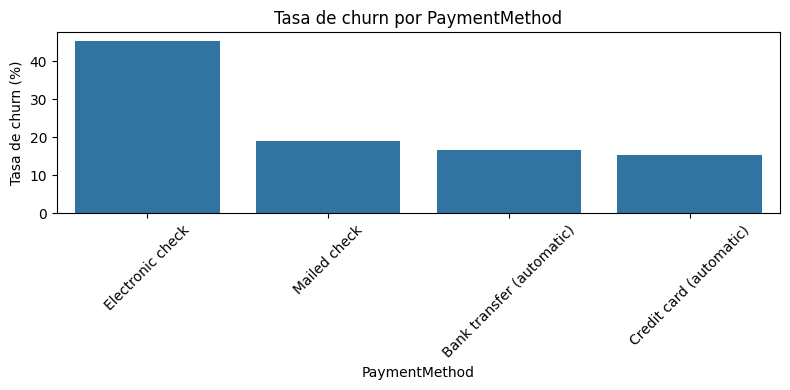
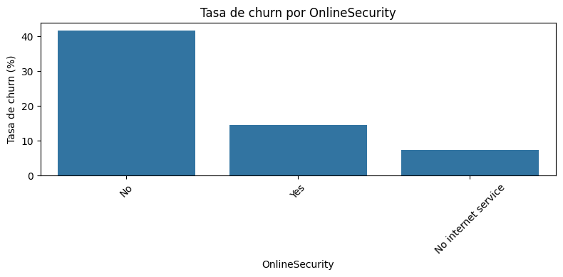
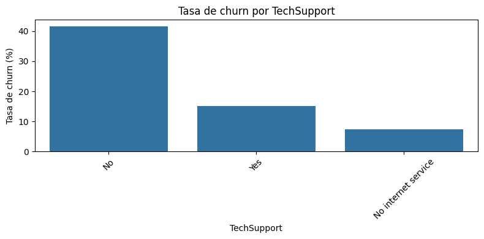
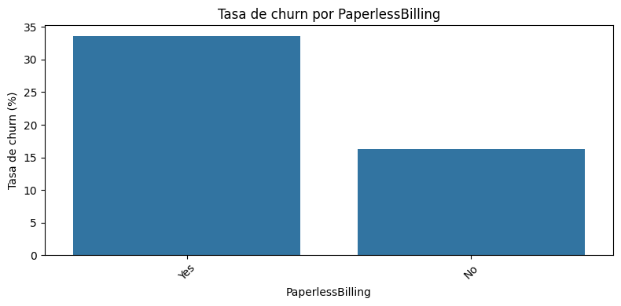
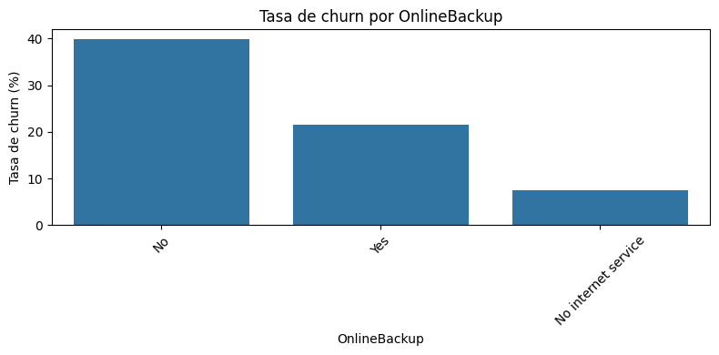
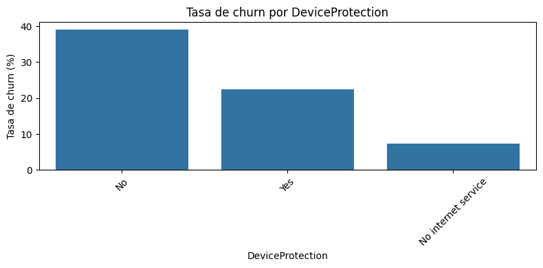
Interpretación#
Las tablas y gráficas de tasa de churn permiten identificar qué categorías concentran mayor riesgo de abandono.
Variables como Contract, PaymentMethod, OnlineSecurity y TechSupport pueden ser especialmente relevantes, ya que muestran diferencias importantes en el porcentaje de clientes que abandonan la empresa dependiendo del tipo de contrato, método de pago o servicios adicionales contratados.
Análisis cruzado de variables categóricas#
Además de analizar cada variable por separado, es útil estudiar combinaciones de variables. En este caso, se analiza la tasa de churn según el tipo de contrato y el método de pago.
tabla_contract_payment = pd.crosstab(
index=df["Contract"],
columns=df["PaymentMethod"],
values=(df["Churn"] == "Yes"),
aggfunc="mean"
) * 100
tabla_contract_payment = tabla_contract_payment.round(2)
tabla_contract_payment
| PaymentMethod | Bank transfer (automatic) | Credit card (automatic) | Electronic check | Mailed check |
|---|---|---|---|---|
| Contract | ||||
| Month-to-month | 34.13 | 32.78 | 53.73 | 31.58 |
| One year | 9.72 | 10.30 | 18.44 | 6.82 |
| Two year | 3.37 | 2.24 | 7.74 | 0.79 |
plt.figure(figsize=(10, 5))
sns.heatmap(
tabla_contract_payment,
annot=True,
fmt=".2f",
cmap="Reds"
)
plt.title("Tasa de churn (%) por tipo de contrato y método de pago")
plt.xlabel("Método de pago")
plt.ylabel("Tipo de contrato")
plt.show()
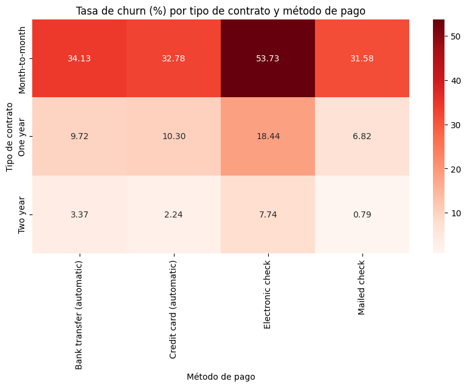
tabla_contract_internet = pd.crosstab(
index=df["Contract"],
columns=df["InternetService"],
values=(df["Churn"] == "Yes"),
aggfunc="mean"
) * 100
tabla_contract_internet = tabla_contract_internet.round(2)
tabla_contract_internet
| InternetService | DSL | Fiber optic | No |
|---|---|---|---|
| Contract | |||
| Month-to-month | 32.22 | 54.61 | 18.89 |
| One year | 9.30 | 19.29 | 2.47 |
| Two year | 1.91 | 7.23 | 0.78 |
plt.figure(figsize=(8, 5))
sns.heatmap(
tabla_contract_internet,
annot=True,
fmt=".2f",
cmap="Reds"
)
plt.title("Tasa de churn (%) por tipo de contrato y servicio de internet")
plt.xlabel("Servicio de internet")
plt.ylabel("Tipo de contrato")
plt.show()
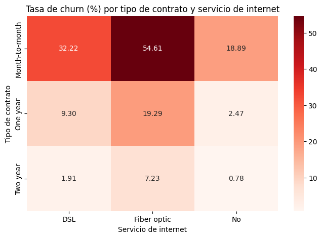
Interpretación#
El análisis cruzado permite detectar perfiles de clientes con mayor riesgo de abandono. Por ejemplo, la combinación entre contratos mensuales y ciertos métodos de pago puede estar asociada con una tasa de churn más alta.
Este tipo de análisis es útil para el negocio porque ayuda a identificar segmentos específicos de clientes que podrían requerir estrategias de retención más personalizadas.
PROCESSED_PATH = BASE_DIR / "data" / "processed" / "telco_churn_clean.csv"
df.to_csv(PROCESSED_PATH, index=False)
print(f"Dataset limpio guardado en: {PROCESSED_PATH}")
Dataset limpio guardado en: c:\Users\sergi\OneDrive\Desktop\Machine Learning\MP3\data\processed\telco_churn_clean.csv
Conclusiones principales del EDA#
A partir del análisis exploratorio realizado, se identifican las siguientes conclusiones:
El dataset contiene 7.043 clientes y 21 variables, incluyendo información demográfica, servicios contratados, facturación y la variable objetivo
Churn.La variable objetivo presenta un desbalance moderado: aproximadamente el 73,46% de los clientes no abandonaron la empresa, mientras que el 26,54% sí lo hicieron. Por esta razón, en la etapa de modelado no será suficiente evaluar únicamente el
accuracy.La variable
tenuremuestra una relación importante con el churn. Los clientes que abandonaron tienen una permanencia promedio menor que los clientes que no abandonaron, lo cual indica que los clientes nuevos o con menor antigüedad pueden representar un grupo de mayor riesgo.Los clientes con contrato mensual presentan una tasa de churn considerablemente más alta que los clientes con contratos de uno o dos años. Esto sugiere que la estabilidad contractual está relacionada con una menor probabilidad de abandono.
El método de pago también muestra diferencias relevantes. Los clientes que pagan mediante
Electronic checkpresentan una tasa de churn más alta que aquellos que utilizan métodos automáticos como tarjeta de crédito o transferencia bancaria.Las variables relacionadas con servicios adicionales, como
OnlineSecurity,TechSupport,OnlineBackupyDeviceProtection, muestran diferencias importantes en la tasa de churn. En general, los clientes que no cuentan con estos servicios presentan mayor probabilidad de abandono.Los clientes con servicio de internet por fibra óptica presentan una mayor tasa de churn frente a otros tipos de servicio. Este patrón debe ser analizado con cuidado en el modelado, ya que puede estar relacionado con costos, calidad percibida o características del segmento de clientes.
El análisis cruzado entre
Contract,PaymentMethodeInternetServicepermite identificar perfiles específicos de mayor riesgo, especialmente clientes con contrato mensual y ciertos métodos de pago.Para la etapa de modelado será importante usar métricas como
precision,recall,F1-scoreyAUC, además de la matriz de confusión y curvas ROC.Las variables identificadas en este EDA servirán como base para construir modelos de clasificación mediante
Pipeline,GridSearchCVy algoritmos como Random Forest, XGBoost, CatBoost y LightGBM.